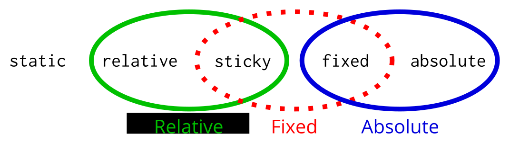

Try it

layout.css.sticky.enabled
h2 {
position: sticky;
}
Corey Ford
(corey in #layout)
2013-09-05
A new type of CSS positioning

In the flow of the document
(like position: relative)
Doesn't always scroll with the page
(like position: fixed)
A sticky positioned box is first laid out in the normal flow (equivalent to position: static). The box may be repositioned as follows, but as with relative positioning, any repositioning does not affect the box that follows.
The box's position depends on its containing block (established as for position:static) as well as its scrolling container, defined by the nearest ancestor in the same document with a computed value for 'overflow-x' or 'overflow-y' other than 'visible', or the viewport if no such ancestor exists.
For any of 'top', 'bottom', 'left', and 'right' that are not 'auto', if the box's normal position would cause that edge of its border box to be less than the specified distance within that content edge of its scrolling container, the box is repositioned to that distance from the edge, such that the box does not move while the container scrolls. The distance the box is repositioned is limited such that the element's margin box never crosses the opposite edge of the content box of its containing block, with the effect that the element starts scrolling with its container again when it reaches the end of its containing block. (If 'top', 'bottom', 'left', and 'right' are all 'auto', the effect will be identical to relative positioning with those values). None of these properties affect the width or height of the element. Percentage values of these properties reference the content box of the scrolling container (but margins and padding are still computed in terms of the containing block).
If both 'top' and 'bottom' are not 'auto' and the element's border box is taller than the content box height of the scrolling container minus the sum of 'top' and 'bottom', then only 'top' is considered and 'bottom' is ignored. Similar logic applies for 'left' and 'right' with widths, except that if the 'direction' property of the containing block is 'ltr', 'right' is ignored, and if it is 'rtl', 'left' is ignored.
Many sites implement a similar effect in JS, but this hurts scrolling performance.
Sticky positioning depends on the sizes and positions of the element itself, its containing block, and its scroll container.
Calculated when
Android, B2G, Metro use async panning and zooming
For position: fixed, we apply the inverse translation to the layer
For position: sticky, we intersect the inverse translation with certain scroll intervals where the layer should not move
layout.css.sticky.enabled